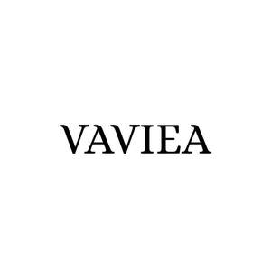

Trade Mark Journal No.2025/048 28 November 2025
UK00004295202 14 November 2025 (3)

- Class 3
- Cosmetics; Cosmetic preparations; Beauty care preparations; Skin care preparations; Hair care preparations; Nail care preparations; Make-up; Makeup; Skin make-up; Facial makeup; Make-up preparations; Lipsticks; Lipstick; Eyeliners; Liquid eyeliners; Sun blocking lipsticks [cosmetics]; Lip cosmetics; Lip balms; Lip balm; Lip gloss; Lip glosses; Eye shadows; Eye shadow; Mascara; False eyelashes; Hair serums; Hairstyling serums; Hair care serums; Beauty serums; Anti-ageing serum; Hair moisturizers; Anti-aging moisturizers; Anti-aging serum for cosmetic use; Hair moisturisers; Anti-ageing serums for cosmetic purposes; Beauty serums with anti-ageing properties; Cosmetics for eye-lashes; Skin moisturizers used as cosmetics; Hair care serum; Perfumes; Fragrances; Oils for perfumes and scents; Perfumery and fragrances; Perfume; Perfume oils; Liquid perfumes; Scents; Essential oils; Preparations for the care of the body; Cosmetic preparations for body care; Anti-wrinkle creams; Moisturising creams; Moisturizing creams; Anti-aging creams; Anti-ageing creams; After-sun creams; Cosmetic creams and lotions; Skin creams; Creams for the skin; Sunscreen creams; Sunscreen lotions; Sun-tanning creams and lotions; Scented body lotions and creams; After-sun lotions; Moisturising creams, lotions and gels; Suncare lotions; Suntan lotions; Sun-block lotions; Skin lotions; Lotions for the skin; Bathing lotions; Massage oils and lotions; Facial lotions; Cleansing lotions; Body lotions; Beauty lotions; Cosmetic hair lotions; Hand lotions; Skin cleansers; Facial cleansers; Acne cleansers, cosmetic; Hand cleansers; Exfoliants; Shampoos; Hair shampoos; Shampoo; Face masks; Facial masks; Skin masks; Hair conditioners; Skin conditioners; Hair masks; Hair care masks; Hairstyling masks; Facial beauty masks; Skin masks [cosmetics]; Hair lotions; Cosmetic facial masks; Skin moisturizer masks; Bath and shower gels; Soaps; Nail polish; Nail polish removers; Skin whitening preparations; Bleaching preparations; Sun protection preparations; Sun care preparations; Anti-aging skincare preparations; Cosmetic kits; Beauty creams; Anti-aging cream; Facial cream; Facial oil; Hair oil.
BRANDS MARKET LTD